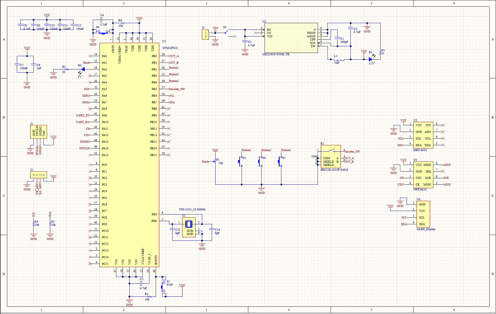
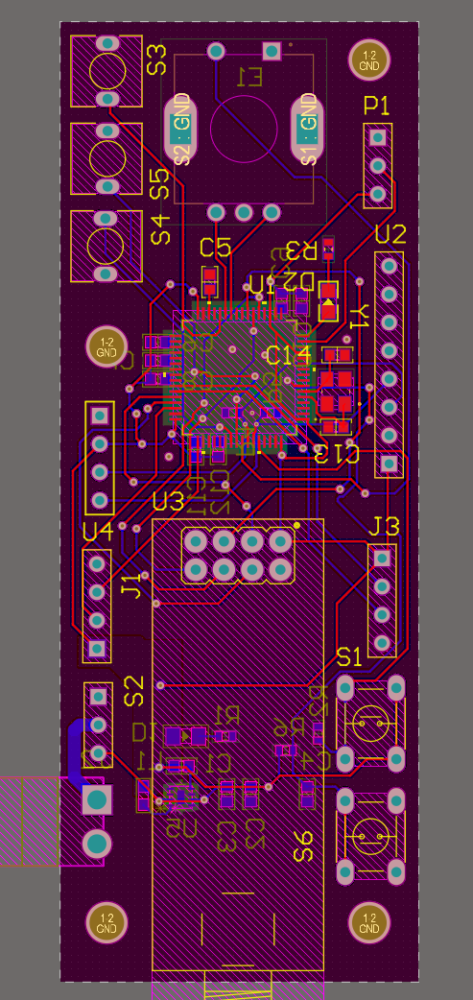
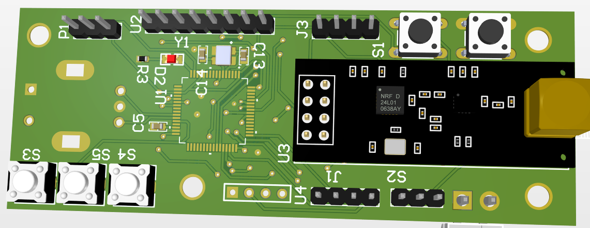

As a continuation of my pursuit to learn embedded systems, I started this project to design and program custom PCBs using the STM32 family of microcontroller chips. This remote is an evolution of my previous project — where that remote acted as a simple trigger, this one includes an accelerometer/gyro module and a larger button array for intuitive robotic control.
Using the IMU (inertial measurement unit), the user can direct motion using the motion of the hand holding the remote, enabling much more intuitive and easy control, especially for people newer to controlling robots.

I leveraged online resources to learn how to design with STM32 chips, specifically Phil's Lab on YouTube and STMicroelectronics datasheets. The process was more difficult than expected — from the precise external crystal oscillator circuit to the large capacitor network needed for proper power delivery. When using a fab house, I had to be meticulous since each mistake meant weeks of waiting for updated boards.

